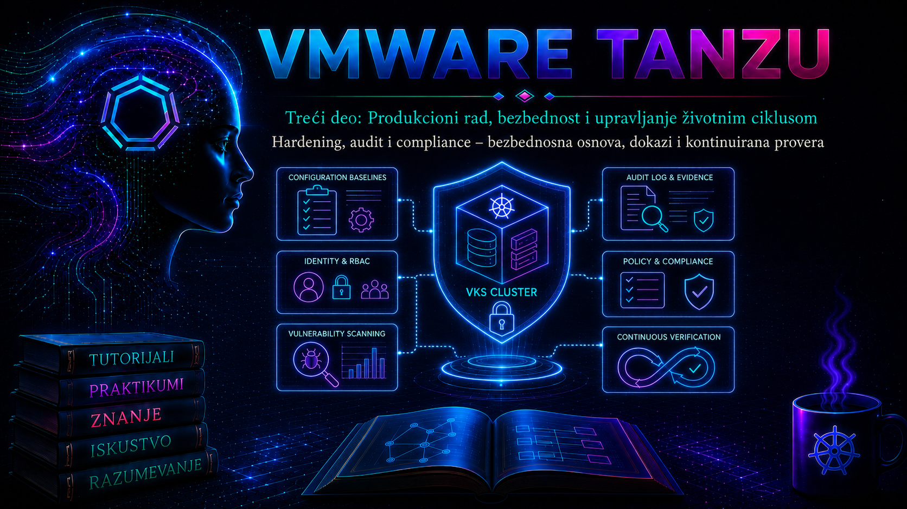

VMware & Tanzu

42.1. Od bezbedne konfiguracije do dokazive kontrole
Hardening je plansko smanjivanje površine napada: uklanjanje nepotrebnih mogućnosti, ograničavanje privilegija, zaštita administrativnih interfejsa, bezbedno podešavanje servisa i uspostavljanje pouzdanog beleženja događaja. Audit je proces kojim se utvrđuje ko je, kada, odakle i nad kojim objektom izvršio radnju, kakav je bio rezultat i koji dokaz to potvrđuje. Compliance, odnosno usklađenost, nije sinonim za bezbednost niti jednokratno „prolaženje skenera”; to je dokazivo i ponovljivo stanje u odnosu na izabrani zahtev, uz evidentirane izuzetke, vlasnike rizika, rokove i korektivne mere.
U Tanzu okruženju nijedna od ove tri discipline ne završava se na granici Kubernetes klastera. Kontrolni obuhvat prolazi kroz identitet i vCenter Server, ESXi i virtuelnu mrežu, Supervisor, VKS klaster, operativni sistem čvorova, Kubernetes API, namespace politike, workload i software supply chain. Zato nalaz „Kubernetes kontrola je prošla” ne dokazuje da su vCenter privilegije pravilne, da ESXi šalje audit zapise na udaljeni sistem ili da se dokazi čuvaju dovoljno dugo. Obrnuto, usklađen vSphere sloj ne sprečava privilegovani kontejner ili preširok Kubernetes RBAC.
| Pojam | Administratorsko pitanje | Tipičan dokaz | Česta greška |
|---|---|---|---|
| Hardening | Da li je sistem podešen prema odobrenoj bezbednosnoj osnovi? | Verzionisana baseline specifikacija, konfiguracioni izvoz, stanje kontrola | Primena generičkog benchmarka bez provere podrške i posledica |
| Audit | Možemo li rekonstruisati bezbednosno važnu radnju? | vCenter događaji, SSO audit, ESXi syslog, Kubernetes audit događaji, SIEM korelacija | Log postoji lokalno, ali nije zaštićen, vremenski usklađen ni dovoljno dugo sačuvan |
| Compliance | Koji zahtev važi, na koji objekat, u kojoj verziji i sa kojim izuzetkom? | Kontrolna matrica, rezultat procene, odobren izuzetak, remediation zapis i retest | „Pass” se proglašava dokazom potpune bezbednosti |
42.2. Kontrolni obuhvat i podela odgovornosti
Prvi zadatak administratora nije pokretanje skenera, već definisanje obuhvata. Za svaki objekat moraju biti poznati vlasnik, verzija, životni ciklus, način upravljanja i izvor autoritativne konfiguracije. Supervisor i VKS nisu isti administrativni domen: deo Supervisor control plane-a i pojedine komponente VKS čvorova životnim ciklusom upravlja platforma. Direktno menjanje statičkih pod manifesta, sistemskih jedinica ili vendor-upravljanih fajlova može biti nepodržano, poništeno narednim reconcile ili upgrade postupkom i ostaviti klaster u stanju koje proizvođač nije testirao. Takav nalaz se ne „popravlja” slepim izvršavanjem generičke CIS remediation komande; najpre se proveravaju Broadcom matrica podrške, odgovarajući Security Controls dokument i podržani deklarativni mehanizam.
| Sloj | Kontrole visokog značaja | Primarni dokaz | Vlasnik promene |
|---|---|---|---|
| vCenter/SSO i upravljačka ravan | MFA ili federacija gde je podržana, least privilege, namenski nalozi, sesije, sertifikati, udaljeni syslog | Role i permission izvoz, SSO audit događaji, task/event zapis, konfiguracija prosleđivanja | vSphere/identity administrator |
| ESXi, compute i storage | Patch nivo, Lockdown Mode prema dizajnu, Secure Boot/TPM gde je podržano, firewall, NTP, syslog, enkripcija i pristup datastore-u | Host profil ili desired state, attestation/alarm stanje, esxcli/PowerCLI izvoz, centralni log | vSphere administrator |
| Supervisor i VKS lifecycle | Podržane verzije, namespace granice, klase i kvote, identitet, mrežne i storage politike, kontrolisan upgrade | vCenter inventar i događaji, Supervisor/VKS specifikacija, status uslova, release matrica | Platform administrator |
| Kubernetes API i klaster | RBAC, audit, admission, Pod Security Standards, secrets, NetworkPolicy, API dostupnost, backup | Kubernetes objekti i audit događaji, policy izveštaji, restore test | Cluster administrator |
| Namespace i workload | ServiceAccount, securityContext, image poreklo, resursna ograničenja, egress, tajne i vlasništvo | Git commit i potpisani artefakt, admission odluka, runtime i registry zapis | Aplikativni tim uz platform guardrails |
| Dokazi i nadzor | Centralizacija, integritet, kontrola pristupa, retencija, vremenska sinhronizacija i alerting | SIEM upit, immutable/WORM politika gde je zahtevana, test alarma, chain-of-custody zapis | Security/SOC i compliance vlasnik |
Verzija benchmarka mora odgovarati proizvodu koji se procenjuje. CIS Kubernetes Benchmark, CIS VMware ESXi/vSphere Benchmark, DISA STIG i interna kontrola nisu međusobno zamenljivi. Rezultat se vezuje za tačno izdanje proizvoda, datum skeniranja, identitet alata i sadržaja kontrole. „Not applicable” zahteva obrazloženje; „not tested” nije prolaz; prihvaćen izuzetak nije trajno brisanje nalaza. Komercijalna dostupnost skenera, Tanzu paketa ili VCF Operations funkcija zavisi od izdanja, pretplate i verzije, pa se pre projektovanja proverava entitlement i aktuelna dokumentacija, a ne samo prisustvo naziva proizvoda u starijem vodiču.
42.3. Bezbednosna osnova: dizajn, odobravanje i promena
Dobra bezbednosna osnova je verzionisan skup tehničkih kontrola i odluka, a ne kopija PDF kontrolne liste. Svaka kontrola sadrži identifikator, cilj, obuhvat, očekivano stanje, način merenja, rizik primene, izuzetak, vlasnika i dokaz. Za VMware sloj polazi se od Broadcom vSphere Security Controls Reference dokumentacije koja je od vSphere 8.0 Update 3 uključena u vSphere Security vodič; za Kubernetes se koriste zvanična bezbednosna dokumentacija, Pod Security Standards i benchmark koji odgovara distribuciji i verziji. Interna osnova zatim prevodi te zahteve na konkretnu topologiju.
- Inventar: popisati vCenter, ESXi, Supervisor, svaki VKS klaster, Kubernetes verzije, namespace-ove, registre, log destinacije, identity providere i vlasnike.
- Klasifikacija: označiti produkcione i neprodukcione sisteme, vrstu podataka, kritičnost, regulatorni okvir i zahteve retencije.
- Mapiranje: povezati internu kontrolu sa primarnim zahtevom i tehničkom tačkom sprovođenja; jedna kontrola može stvarati dokaze u više slojeva.
- Test uticaja: u laboratoriji proveriti kompatibilnost workload-a, dostupnost API-ja, upgrade i rollback. Hardening koji prekine lifecycle upravljanje nije prihvatljiva pobeda.
- Odobravanje: vlasnik platforme, bezbednosti i servisa odobravaju baseline i dokumentovane izuzetke.
- Implementacija kao kod: gde je podržano, politike i konfiguracije čuvati u Git-u, pregledati kroz pull request i isporučivati kontrolisanim pipeline-om.
- Kontinuirana provera: meriti drift, prioritizovati nalaze, sprovoditi remediation, retest i zatvaranje uz sačuvan dokaz.
Kontrole se ne primenjuju sve istom brzinom. Kritične kontrole identiteta, javne izloženosti, poznato eksploatisanih ranjivosti i gubitka audit traga imaju kraći SLA od dokumentacionog odstupanja niskog rizika. Ipak, prioritet mora nastati iz kombinacije ozbiljnosti, izloženosti, poslovnog uticaja i verovatnoće, a ne samo iz numeričkog skora skenera.
42.4. Hardening vSphere, Supervisor i VKS slojeva
Upravljačka ravan mora biti dostupna samo sa administrativnih mreža ili kontrolisanih bastion sistema. Interaktivni administratorski nalozi ne koriste se za automatizaciju; servisni identiteti dobijaju minimalne privilegije, kratkotrajnije kredencijale gde je moguće i jasnog vlasnika. NTP je bezbednosna zavisnost, jer bez usklađenog vremena korelacija vCenter, ESXi, Kubernetes, registry i SIEM zapisa gubi dokaznu vrednost. DNS, PKI i sertifikati takođe su deo hardeninga: zaobilaženje TLS validacije radi „bržeg rešenja” proizvodi slepu tačku i mora biti tretirano kao incident ili vremenski ograničen izuzetak.
- ograničiti vCenter i ESXi administrativne interfejse mrežnim ACL/firewall pravilima i nadzirati neuspele prijave;
- koristiti RBAC role prema poslovnoj funkciji, izbegavati direktne dozvole kada grupe mogu dati preglednije nasleđivanje i redovno pregledati efektivne privilegije;
- održavati podržane build verzije vCenter, ESXi, Supervisor i VKS izdanja, uz proveru interoperabilnosti pre nadogradnje;
- prosleđivati relevantne vCenter i ESXi zapise udaljenom, kontrolisanom sistemu; TLS transport koristiti kada je podržan i pravilno uspostavljen;
- SSH i ESXi Shell držati isključenim osim tokom odobrene, vremenski ograničene dijagnostike; uključivanje mora proizvesti događaj i tiket;
- primenjivati Secure Boot, TPM/attestation, Lockdown Mode, enkripciju i zaštitu ključeva prema hardverskim preduslovima i dizajnu oporavka, ne kao izolovane checkbox kontrole;
- ne menjati ručno vendor-upravljane Supervisor/control-plane komponente; koristiti podržane vCenter, Cluster API/VKS i package lifecycle interfejse.
PowerCLI je koristan za read-only snapshot stanja. Sledeći primer se izvršava sa administratorske radne stanice, nalogom koji ima pravo čitanja inventara i događaja. Ne menja stanje, ali izlaz može sadržati osetljive nazive i identitete, pa se čuva u kontrolisanoj lokaciji.
Connect-VIServer -Server vcsa.lab.example
$stamp = Get-Date -Format 'yyyyMMdd-HHmmss'
Get-VMHost |
Select-Object Name, Version, Build, ConnectionState |
Export-Csv -NoTypeInformation -Encoding UTF8 "esxi-inventory-$stamp.csv"
Get-VIEvent -Start (Get-Date).AddHours(-24) -MaxSamples 10000 |
Select-Object CreatedTime, UserName, FullFormattedMessage |
Export-Csv -NoTypeInformation -Encoding UTF8 "vcenter-events-$stamp.csv"
Disconnect-VIServer -Confirm:$false
Očekuje se da svaki host ima odobrenu verziju/build i da događaji pokrivaju posmatrani interval. -MaxSamples je zaštitna granica, ne dokaz potpunosti: ako je broj događaja dostigao limit, upit se deli na manje vremenske prozore ili se koristi centralna log platforma. Izvoz se hash-uje i beleže se vreme, vremenska zona, izvršilac i filter, jer CSV bez provenance podataka nije dovoljan audit dokaz.
42.5. Kubernetes hardening: identitet, workload i admission
Kubernetes hardening počinje od API-ja. Pristup se dodeljuje grupama i ServiceAccount identitetima sa najmanjim potrebnim pravima; privilegije cluster-admin, pristup resursu secrets, mogućnost kreiranja CSR-a, impersonation i menjanje admission/RBAC objekata zahtevaju poseban nadzor. Kubeconfig je kredencijal, a ne obična konfiguraciona datoteka: mora imati kontrolisanu distribuciju, ograničene dozvole, rok važenja gde platforma to omogućava i postupak opoziva.
Pod Security Admission (PSA) sprovodi tri standardna profila: privileged, baseline i restricted, kroz režime enforce, audit i warn. Razuman migracioni tok je da se najpre uključe audit i warn, analiziraju workload-i i izuzeci, zatim postepeno podigne enforce. Produkciona politika se pin-uje na podržanu Kubernetes minor verziju umesto slepog korišćenja latest, kako upgrade ne bi neplanirano promenio kriterijum. Sistemski namespace-ovi i vendor komponente proveravaju se zasebno; globalno označavanje svih namespace-ova bez testa može prekinuti mrežne, storage ili monitoring agente.
# READ-ONLY: trenutno stanje PSA oznaka
kubectl get namespaces \
-L pod-security.kubernetes.io/enforce \
-L pod-security.kubernetes.io/audit \
-L pod-security.kubernetes.io/warn
# READ-ONLY: proveri sopstveno efektivno pravo
kubectl auth can-i create pods -n hardening-lab
kubectl auth can-i --list -n hardening-lab
# READ-ONLY: server-side provera bez čuvanja objekta
kubectl apply --dry-run=server -f workload.yaml
kubectl auth can-i --list daje koristan operativni pregled, ali nije potpuni dokaz svih eskalacionih puteva. Nalaz se dopunjuje pregledom RoleBinding/ClusterRoleBinding objekata, agregiranih rola i prava nad privilegovanim resursima. Server-side dry-run prolazi kroz admission lanac koji server primenjuje na zahtev, ali njegov rezultat zavisi od identiteta, namespace-a, aktuelnih politika i dostupnosti webhook-ova.
apiVersion: v1
kind: Namespace
metadata:
name: hardening-lab
labels:
pod-security.kubernetes.io/enforce: baseline
pod-security.kubernetes.io/enforce-version: v1.34
pod-security.kubernetes.io/audit: restricted
pod-security.kubernetes.io/audit-version: v1.34
pod-security.kubernetes.io/warn: restricted
pod-security.kubernetes.io/warn-version: v1.34
Vrednost v1.34 u primeru je laboratorijski primer, ne univerzalna preporuka. Zamenjuje se minor verzijom koju konkretan VKS klaster podržava i koju je organizacija testirala. Workload koji cilja restricted tipično zabranjuje privilege escalation, izvršava se kao non-root, odbacuje Linux capabilities, bira odobren seccomp profil i ne koristi host namespace ili proizvoljne hostPath volumene. NetworkPolicy, image verifikacija, zaštita tajni i runtime detekcija ostaju zasebne kontrole; PSA ih ne zamenjuje.
42.6. Audit trag: događaj, transport, integritet i retencija
Kubernetes audit beleži hronološki sled zahteva prema API serveru. Audit događaj može sadržati faze RequestReceived, ResponseStarted, ResponseComplete ili Panic, u zavisnosti od zahteva i politike. Nivoi None, Metadata, Request i RequestResponse određuju količinu podataka. Beleženje tela zahteva ili odgovora može uhvatiti tajne, tokene i lične podatke; širok RequestResponse podiže volumen, trošak i rizik. Politika zato prvo isključuje bezvredne visoko-frekventne događaje, štiti osetljive resurse i čuva dovoljno metapodataka za istragu.
apiVersion: audit.k8s.io/v1
kind: Policy
omitStages:
- RequestReceived
rules:
- level: None
nonResourceURLs:
- /healthz*
- /livez*
- /readyz*
- level: Metadata
resources:
- group: ""
resources: ["secrets", "configmaps"]
- level: Request
verbs: ["create", "update", "patch", "delete"]
- level: MetadataOvaj manifest je obrazac za razumevanje semantike, ne naredba da se na Supervisor ili VKS control plane-u ručno zameni vendor politika. Podržani način uključivanja, menjanja i prosleđivanja audit logova razlikuje se prema proizvodu i verziji. Kod podržanih Tanzu Kubernetes Grid implementacija dokumentacija upozorava da audit može generisati veliki volumen i preporučuje log forwarder; kod vSphere Supervisor/VKS modela najpre se proverava odgovarajući release vodič i podržana observability integracija. Ručna promena control-plane fajlova bez eksplicitne podrške nije prihvatljiv produkcioni postupak.
Audit lanac je upotrebljiv samo ako ima sinhronizovano vreme, pouzdan transport, kontrolu pristupa, zaštitu od izmene, nadziranu retenciju i proverljiv upit. vCenter task/event nije isto što i svaki servisni log; ESXi lokalni log nije dovoljan dokaz ako napadač sa privilegijama može da ga ukloni; Kubernetes API audit ne vidi radnje unutar kontejnera koje ne prolaze kroz API. Zbog toga SIEM koreliše najmanje identitet, izvorni IP, objekat, glagol/radnju, rezultat, vreme i correlation/request identifikatore kada postoje.
| Izvor | Šta dokazujemo | Šta tražimo | Ograničenje |
|---|---|---|---|
| vCenter task/event i SSO audit | Prijavu, promenu privilegije, konfiguracionu ili lifecycle radnju | Korisnika, vreme, objekat, rezultat i povezane događaje | Retencija i detalj zavise od konfiguracije; centralno prosleđivanje se posebno potvrđuje |
| ESXi syslog/audit | Host servis, autentikaciju, firewall i sistemsku promenu | Host, servis, severity, udaljenu destinaciju i prekid prosleđivanja | Lokalni zapis može rotirati ili biti nedostupan posle incidenta |
| Kubernetes audit | API zahtev i autorizacionu/admission odluku | user, sourceIPs, verb, objectRef, status i annotations |
Ne beleži automatski svaku runtime radnju unutar pod-a |
| Admission/policy engine | Zašto je manifest dozvoljen, upozoren ili odbijen | Pravilo, constraint/policy verziju, objekat i odluku | Audit/report režim nije enforcement |
| Registry i supply chain | Poreklo, digest, sken, potpis i promociju image-a | Neizmenjivi digest, builder, SBOM, ranjivost i odluku admission-a | Tag nije stabilan identitet artefakta |
42.7. Dokazni paket i kontinuirana provera
Dokaz mora biti ponovljiv i razumljiv nezavisnom pregledniku. Minimalni paket sadrži identitet kontrole i njenog vlasnika, tačan obuhvat, verziju proizvoda i benchmarka, vreme i vremensku zonu, nalog/alatu kojim je provera izvršena, sirov rezultat, tumačenje, hash artefakta, nalaz, izuzetak ako postoji, korektivnu promenu i rezultat ponovnog testa. Screenshot bez objekta, vremena i konteksta je slab dokaz; ručno prepisana vrednost bez izvornog izvoza još slabiji.
# READ-ONLY prikupljanje; izvršava se iz bezbedne admin radne stanice
evidence_dir="evidence-$(date -u +%Y%m%dT%H%M%SZ)"
mkdir -m 0700 "$evidence_dir"
kubectl version -o yaml > "$evidence_dir/kubernetes-version.yaml"
kubectl get nodes -o wide > "$evidence_dir/nodes.txt"
kubectl get ns --show-labels > "$evidence_dir/namespaces.txt"
kubectl get clusterrolebindings -o yaml > "$evidence_dir/clusterrolebindings.yaml"
kubectl get networkpolicies -A -o yaml > "$evidence_dir/networkpolicies.yaml"
(
cd "$evidence_dir" || exit 1
sha256sum -- * > SHA256SUMS
)Ovaj skup je namerno ograničen, ali i dalje može otkriti identitete, interne adrese i autorizacionu strukturu. Ne izvoze se Secret objekti niti kubeconfig. Direktorijum se prenosi u odobreno spremište uz propisanu retenciju i kontrolu pristupa. Hash potvrđuje da se sadržaj nije promenio nakon prikupljanja, ali sam po sebi ne dokazuje ko ga je prikupio niti da je izvor bio pouzdan; zato su provenance zapis, tiket i centralna evidencija sastavni deo paketa.
Kontinuirana kontrola radi kao zatvorena petlja: željeno stanje → merenje → nalaz → trijaža → korekcija → ponovni test → dokaz → praćenje drifta. Skener se izvršava posle značajne promene i periodično, ali se nalazi deduplikuju po kontroli i objektu. Promena benchmarka se prvo analizira u sandbox-u, jer novi sadržaj može promeniti rezultat bez ikakve promene platforme. Dashboard mora razlikovati novo odstupanje, prihvaćen izuzetak, nalaz u remediation-u, zastareo dokaz i kontrolu koja nije mogla biti testirana.
42.8. Praktikum – baseline, audit dokaz i bezbedna korekcija
Cilj i kontekst. Platform tim priprema kvartalni dokaz usklađenosti za jedan laboratorijski VKS klaster. Potrebno je inventarisati stanje, postaviti PSA u postepenom režimu, dokazati odbijanje rizičnog workload-a, proveriti audit trag kroz podržanu log platformu i dokumentovati rollback. Vežba ne menja Supervisor control plane niti ESXi hardening parametre.
Topologija. Jedan vCenter sa omogućenim Supervisor-om, jedan VKS klaster, administratorska Linux radna stanica sa kubectl, opcioni PowerCLI host i centralna log/SIEM destinacija. Namespace hardening-lab ne sme sadržati produkcione workload-e.
Preduslovi i privilegije. VKS kontekst mora biti eksplicitno izabran; korisnik sme da kreira namespace i menja njegove oznake samo u laboratoriji. Za pregled logova koristi se read-only SIEM uloga. Pre početka beleže se verzije VKS/Kubernetes-a, aktuelni kontekst, promena/tiket i podržan način pristupa audit podacima za konkretno izdanje.
# READ-ONLY zaštitne provere
kubectl config current-context
kubectl cluster-info
kubectl version
kubectl auth can-i create namespaces
kubectl auth can-i patch namespaces
# STATE-CHANGING: kreiranje isključivo laboratorijskog namespace-a
kubectl create namespace hardening-lab
Očekivani rezultat je nov, prazan namespace. Ako naziv konteksta, server adresa ili identitet nisu očekivani, postupak se prekida pre svake promene. Greška Forbidden ne zaobilazi se korišćenjem tuđeg admin kubeconfig-a; traži se odobrena privremena privilegija ili postupak izvršava vlasnik kontrole.
Vežba 1 – Snimanje početnog stanja
evidence_dir="hardening-lab-$(date -u +%Y%m%dT%H%M%SZ)"
mkdir -m 0700 "$evidence_dir"
kubectl config current-context > "$evidence_dir/context.txt"
kubectl version -o yaml > "$evidence_dir/version.yaml"
kubectl get namespace hardening-lab -o yaml > "$evidence_dir/namespace-before.yaml"
kubectl get rolebindings -n hardening-lab -o yaml > "$evidence_dir/rolebindings-before.yaml"
kubectl get networkpolicies -n hardening-lab -o yaml > "$evidence_dir/networkpolicies-before.yaml"
Validacija: svi fajlovi postoje, namespace-before.yaml nema PSA oznake koje vežba tek treba da postavi, a kontekst i server pripadaju laboratoriji. Prazan rezultat za RoleBinding ili NetworkPolicy može biti legitimno početno stanje, ali se beleži kao nalaz, ne prikriva preusmeravanjem greške.
Vežba 2 – Postepeno uvođenje Pod Security politike
Najpre se primenjuje baseline enforcement i restricted audit/warn. Minor verziju u komandama zameniti stvarnom, testiranom verzijom klastera. Komande menjaju namespace i bezbedne su samo zato što je obuhvat izolovan i prazan.
pss_version="v1.34"
kubectl label --overwrite namespace hardening-lab \
pod-security.kubernetes.io/enforce=baseline \
pod-security.kubernetes.io/enforce-version="$pss_version" \
pod-security.kubernetes.io/audit=restricted \
pod-security.kubernetes.io/audit-version="$pss_version" \
pod-security.kubernetes.io/warn=restricted \
pod-security.kubernetes.io/warn-version="$pss_version"
kubectl get namespace hardening-lab --show-labels
kubectl get namespace hardening-lab -o yaml \
> "$evidence_dir/namespace-after-labels.yaml"
Očekivani rezultat je šest tačnih oznaka. Ako API odbije verziju ili oznaku, proveravaju se Kubernetes minor verzija, pravopis, admission konfiguracija i vendor dokumentacija. Ne prelazi se na latest samo da bi komanda prošla; bira se podržana i dokumentovana vrednost.
Vežba 3 – Negativan test i korekcija workload-a
Sledeći manifest je namerno neusklađen i služi isključivo za server-side dry-run. Ne kreira pod, pa je bezbednija simulacija od pokretanja privilegovanog kontejnera.
apiVersion: v1
kind: Pod
metadata:
name: psa-negative-test
namespace: hardening-lab
spec:
hostPID: true
containers:
- name: test
image: registry.example.invalid/security/test@sha256:REPLACE_WITH_APPROVED_DIGEST
securityContext:
privileged: true
command: ["sleep", "300"]kubectl apply --dry-run=server -f psa-negative.yaml 2>&1 |
tee "$evidence_dir/psa-negative-result.txt"
Očekuje se odbijanje zbog baseline prekršaja, uključujući privilegovani kontejner i host PID. Ako zahtev prođe, proveravaju se namespace iz manifesta, stvarne oznake, aktivnost Pod Security admission-a i da li se test zaista izvršava prema očekivanom klasteru. Ovo je bezbednosni nalaz visokog prioriteta; ne nastavlja se stvarnim kreiranjem pod-a.
Korektni workload mora koristiti odobren image digest i ispuniti restricted zahteve. Primer ispod je obrazac; registry, digest i funkcionalna potreba aplikacije moraju biti stvarni.
apiVersion: v1
kind: Pod
metadata:
name: psa-compliant-test
namespace: hardening-lab
spec:
automountServiceAccountToken: false
securityContext:
runAsNonRoot: true
seccompProfile:
type: RuntimeDefault
containers:
- name: test
image: registry.example.invalid/security/test@sha256:REPLACE_WITH_APPROVED_DIGEST
securityContext:
allowPrivilegeEscalation: false
capabilities:
drop:
- ALL
resources:
requests:
cpu: 10m
memory: 16Mi
limits:
cpu: 100m
memory: 64Mikubectl apply --dry-run=server -f psa-compliant.yaml 2>&1 |
tee "$evidence_dir/psa-compliant-dry-run.txt"
# STATE-CHANGING: izvršiti samo sa stvarnim odobrenim digestom
kubectl apply -f psa-compliant.yaml
kubectl get pod psa-compliant-test -n hardening-lab -o wide
kubectl describe pod psa-compliant-test -n hardening-lab
Kriterijum uspeha je dry-run bez PSA upozorenja i, kada je korišćen stvarni digest, pod u stanju koje odgovara njegovoj komandi. ImagePullBackOff ukazuje na namerno lažan ili nedostupan image, pogrešan digest, DNS/TLS ili registry autentikaciju, a ne na neuspeh PSA kontrole. Dijagnostika počinje događajima u kubectl describe, zatim proverava registry pristup i prethodno obrađene imagePullSecret/CA zavisnosti.
Vežba 4 – Audit korelacija i dokaz
U odobrenoj centralnoj log platformi ograničiti prozor na nekoliko minuta oko negativnog testa i filtrirati prema korisničkom identitetu, namespace-u hardening-lab, glagolu create i resursu pods. Traži se Kubernetes audit događaj sa objektom, izvorom, statusom i Pod Security audit annotations, kao i eventualni admission zapis. Konkretna sintaksa SIEM upita zavisi od proizvoda i šeme ingest-a, pa se ne izmišlja generička komanda.
{
"verb": "create",
"objectRef": {
"resource": "pods",
"namespace": "hardening-lab"
},
"responseStatus": {
"code": 403
}
}JSON je skraćeni očekivani oblik, ne garantovan doslovni izlaz. Ako događaja nema, proveravaju se redom: tačno UTC vreme testa, klaster/source oznaka, identitet i namespace, ingest kašnjenje, parsiranje, audit policy nivo, log-forwarder zdravlje i podržana konfiguracija platforme. Privremeni workaround može biti očuvanje lokalnog vendor-podržanog log izvora uz strogo kontrolisan pristup; trajna mera je popravka prosleđivanja i alarm za budući prekid. Ne menja se control-plane audit policy tokom incidenta pre nego što se sačuvaju dokazi i potvrdi podržan postupak.
Vežba 5 – Incident scenario: neočekivani ClusterRoleBinding
Simptom: SIEM prijavljuje kreiranje ClusterRoleBinding-a ka cluster-admin. Obim i posledica: utvrditi identitet subjekta, klaster, vreme, efektivne privilegije i radnje posle eskalacije. Neposredni uzrok može biti konkretan binding; osnovni uzrok može biti kompromitovan kubeconfig, preširoka automatizaciona rola ili neodobrena ručna promena.
# READ-ONLY: sačuvati stanje pre bilo kakve korekcije
kubectl get clusterrolebindings -o yaml \
> "$evidence_dir/clusterrolebindings-incident.yaml"
kubectl describe clusterrolebinding suspicious-binding \
> "$evidence_dir/suspicious-binding.txt"
kubectl auth can-i --as=system:serviceaccount:namespace:name '*' '*' \
> "$evidence_dir/suspicious-subject-access.txt"Nazivi se zamenjuju stvarnim vrednostima. Provere su read-only, ali impersonation test zahteva posebno pravo i mora biti odobren; ako nije dozvoljen, RBAC se analizira iz sačuvanih objekata. Pre uklanjanja binding-a čuvaju se YAML, audit događaji, povezani token/session podaci i naknadne radnje identiteta. Privremeno ograničenje može obuhvatiti opoziv konkretnog kredencijala i kontrolisano uklanjanje neodobrenog binding-a, ali tek nakon procene uticaja i odobrenja incident komandanta. Trajna mera uklanja osnovni uzrok, rotira zahvaćene kredencijale, ispravlja RBAC/pipeline i dodaje detekciju. Oporavak se potvrđuje ponovnim testom efektivnih prava i pregledom da nema persistence mehanizama.
Rollback i završetak laboratorije
# Sačuvaj završno stanje i hash pre čišćenja
kubectl get namespace hardening-lab -o yaml \
> "$evidence_dir/namespace-final.yaml"
(
cd "$evidence_dir" || exit 1
sha256sum -- * > SHA256SUMS
)
# STATE-CHANGING / DESTRUKTIVNO: samo za namenski laboratorijski namespace
kubectl delete namespace hardening-lab --wait=true
# READ-ONLY potvrda; očekuje se NotFound
kubectl get namespace hardening-lab
Brisanje namespace-a uklanja sve namespaced objekte u njemu i nema smislen „undo”. Pre izvršenja proveriti kontekst, naziv i da namespace nema deljene ili produkcione resurse. Ako je potrebno zadržati laboratoriju, rollback PSA oznaka može se izvršiti pojedinačnim kubectl label namespace hardening-lab naziv-oznake-, ali vraćanje početnog stanja mora koristiti tačne oznake iz namespace-before.yaml, ne pretpostavku da ih nije bilo.
42.9. Troubleshooting obrazac za neusaglašenost i gubitak audit traga
| Simptom | Najmanje invazivne provere | Verovatan uzrok | Bezbedna trajna mera |
|---|---|---|---|
| Skener iznenada daje mnogo novih fail nalaza | Uporediti verziju benchmarka, skenera, proizvoda i prethodni sirov rezultat | Promena sadržaja kontrole, pogrešan profil ili stvarni drift | Reprodukovati reprezentativne nalaze, mapirati verzije i tek zatim planirati remediation |
| Kubernetes audit događaji nedostaju u SIEM-u | Proveriti UTC prozor, source/cluster polja, ingest lag i zdravlje forwarder-a | Filter, parser, retencija, audit policy ili prekid transporta | Popraviti podržani pipeline, dodati health alert i dokazati end-to-end test događajem |
| PSA odbija sistemski add-on | Proveriti namespace, labels, događaj, manifest i vendor zahtev | Preširoko primenjen profil ili legitimno privilegovana komponenta | Minimalan, dokumentovan i vremenski pregledan izuzetak; ne isključivati politiku globalno |
| Hardening nestaje posle upgrade-a/reconcile-a | Uporediti desired state, Git istoriju, lifecycle događaje i podržane tačke konfiguracije | Ručna promena vendor-upravljanog sloja | Premestiti kontrolu u podržani deklarativni mehanizam ili dokumentovati kompenzacionu kontrolu |
| Host šalje log lokalno, ali ne udaljeno | Proveriti destinaciju, DNS/NTP, firewall, TLS poverenje i prijem na kolektoru | Mrežna blokada, CA greška, pogrešan URI ili collector kvar | Ispraviti transport i alarmirati prekid; lokalni buffer tretirati samo kao privremenu zaštitu |
Redosled istrage je uvek isti: sačuvati početno stanje i poslednje promene, odrediti obim i posledicu, korelisati događaje/metrike/logove, postaviti hipotezu, potvrditi uzrok, odabrati najmanje rizičnu korekciju, validirati funkciju i kontrolu, pa dokumentovati nalaz. „Ponovo pokreni komponentu” bez dokaza može obrisati kratkotrajno stanje, promeniti vremensku liniju i otežati osnovni uzrok.
Administratorske prakse
- Definiši baseline po proizvodu, verziji i administrativnom domenu; ne primenjuj generičku remediation skriptu na vendor-upravljani control plane.
- Razdvoji nalog koji procenjuje stanje od naloga koji ga menja i evidentiraj svaku privilegovanu sesiju.
- Koristi Git i peer review za politike, ali čuvaj runtime dokaz nezavisno od željene konfiguracije.
- Centralizuj logove, testiraj transport, parsiranje, alerting i retenciju; postojanje konfiguracije nije dokaz da događaj stiže.
- Pin-uj verzije standarda i politika, zabeleži datum važenja i proceni posledice pre njihovog ažuriranja.
- Svaki izuzetak neka ima poslovno obrazloženje, kompenzacionu kontrolu, vlasnika, datum isteka i obavezni ponovni pregled.
- Ne sakupljaj više podataka nego što je potrebno: audit i compliance spremišta štiti kao bezbednosno osetljive sisteme.
- Posle remediation-a potvrdi i bezbednosnu kontrolu i funkcionalnost platforme, upgrade put i oporavak.
Završna kontrolna tačka
Nakon ove lekcije administrator treba da može da:
- razlikuje hardening, audit i compliance i poveže ih sa slojevima Tanzu platforme;
- definiše verzionisanu bezbednosnu osnovu sa merljivim stanjem, vlasnikom, dokazom i izuzetkom;
- prepozna granicu između podržane konfiguracije i nepodržanog ručnog menjanja Supervisor/VKS komponenti;
- proveri vSphere i Kubernetes stanje read-only komandama i bezbedno sačuva dokaz sa provenance podacima i hash-om;
- postepeno uvede PSA kroz audit/warn/enforce, pin-uje podržanu verziju i sprovede negativan dry-run test;
- objasni sadržaj Kubernetes audit događaja, rizik od prekomernog logovanja i potrebu za centralnim, zaštićenim transportom;
- razdvoji simptom, neposredni i osnovni uzrok, privremenu meru, trajnu korekciju i dokaz oporavka;
- organizuje kontinuiranu proveru drifta, remediation, retest i vremenski ograničene izuzetke.
Zaključak
Hardening Tanzu platforme nije lista agresivnih podešavanja, već kontrolisano smanjivanje rizika bez narušavanja podržanog lifecycle-a. Audit nije gomila logova, već sposobnost da se radnja pouzdano rekonstruiše kroz identitet, vreme, objekat, odluku i rezultat. Compliance nije završni procenat na dashboard-u, već upravljački proces u kojem je svako očekivanje vezano za tačnu verziju, obuhvat, dokaz, vlasnika i rok.
Odgovoran administrator zato ne menja stanje pre nego što prikupi dokaze, ne proglašava skener autoritetom iznad proizvođačke podrške i ne zatvara nalaz bez ponovnog testa. Kada su vSphere, Supervisor, VKS, Kubernetes i supply chain tragovi vremenski usklađeni, centralno zaštićeni i povezani sa deklarativnim željenim stanjem, bezbednost postaje proverljiva operativna disciplina. Ta osnova neposredno priprema naredne lekcije o monitoringu, alarmima i kapacitetu, jer kontinuirana usklađenost zavisi od pouzdanog posmatranja promene i pravovremene reakcije.